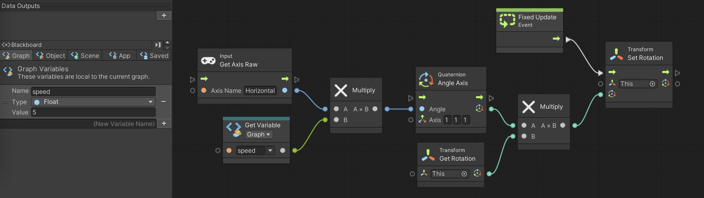

重力、反発と来たので次は摩擦を Unity を使って再現してみましょう。
演習を行う前に新しいシーンを作り、箱と坂道を作成します。
こちらのテキストに従ってシーンを新規作成をする(シーン名は適当で結構です。背景も任意で結構ですが以下の例では見やすいように黒にしています)
ヒエラルキー右クリック → 3D Object → Cube で箱を新規作成し、名前を「HAKO」、Position を (0,1,0)にする
HAKO に Rigidbody をアタッチする
ヒエラルキー右クリック → 3D Object → Cube で箱を新規作成し、名前を「SAKA」、Position を (0,0,0)、Scale を (30,1,1) にする
さてこのままでは坂道になっていませんので SAKA を傾けたいと思うのですが、SAKA を傾けても HAKO は傾いてくれません。
そこで HAKO と SAKA に「親子関係」を設定します。
SAKA を親、HAKO を子供に設定するには以下の様にします。
ヒエラルキーの HAKO を SAKA の上にドロップする
すると SAKA の右下に HAKO が移動して親子関係になり(図1)、SAKA の Position や Rotation の値を変更すると HAKO も一緒に移動するようになります。
図1. SAKA と HAKO を親子関係にする

では次の手順で坂道を作ってみましょう。
SAKA のインスペクタを開いて Position を (5,2,0)、Rotation を (0,0,30) にする
この時の状況が図2になります。
図2. HAKO と SAKA

では摩擦の設定をしていきます。
摩擦も反発の時と同様に物理マテリアルを使って設定します。
シーンを新規作成した際に Scenes フォルダを開いたままにしている人は一つ上のフォルダに戻る
アセットフォルダの空いている部分を右クリックしてメニューを表示し、Create → Physic Material を選ぶ
アセットフォルダ内に「New Physic Material」というアセットが出来るので「HAKO Physic Material」に名前を変更する
同様に「SAKA Physic Material」も作成する
では摩擦の設定をしていきます。
HAKO Physic Material をクリックしてインスペクタを表示する
Dynamic Friction を 0.29、Static Friction を 0.29、Bounciness を 0 にする
HAKO Physic Material をドラッグしてヒエラルキーの HAKO の上にドロップする
HAKO のインスペクタを開き、 Box Collider の中に HAKO Physic Material と表示されているのを確認する
同様に SAKA Physic Material の Dynamic Friction を 0.29、Static Friction を 0.29、Bounciness を 0 にし、SAKA にドラッグ＆ドロップし、SAKA のインスペクタを開いて確認する
ここまで出来たら実行ボタンを押してみましょう。
おっと、 HAKO が謎の回転運動をし始めました。
そこで HAKO が変な回転をしない様に以下の手順で設定しましょう。
HAKO のインスペクタを表示する
Rigit Body の中の Constraints → Freeze Rotation の x,y,z にチェックを入る(図3)。
図3. HAKO が回転しないようにする

では改めて実行ボタンを押してみましょう。
すると摩擦の影響で HAKO が静止したままになります。
では実行を停止し、今度は「HAKO Physic Material」の Dynamic Friction を 0.28、Static Friction を 0.28 にし、同様に「SAKA Physic Material」の Dynamic Friction を 0.28、Static Friction を 0.28 にしてから再実行して下さい。
すると摩擦力が落ちて HAKO がゆっくり滑り落ち始めます。
では次は「HAKO Physic Material」と「SAKA Physic Material」の Dynamic Friction と Static Friction を全て 0 にして再実行して下さい。
すると全く摩擦が無くなります。
この様に、Dynamic Friction と Static Friction の値が 0 に近づくにつれて摩擦力が落ちていきます。
ここから先は少し難しい話なので分からなければ飛ばしても結構です。
ただし Unity の物理演算機能を使いこなすためには大事な知識ですので興味のある人は是非トライして下さい。
反発の時と同様に、まずは現実世界の摩擦についておさらいしておきます。
物体同士が接触している時の摩擦には動摩擦力と静止摩擦力の2種類があります。
$\mu$ を動摩擦係数、$\mu'$ を静止摩擦係数、$N$ を垂直抗力(接触面が物体を押し返す力、単位はニュートン)とすると
動摩擦力 = $\mu \cdot N$
(最大)静止摩擦力 = $\mu' \cdot N$
となります(単位はニュートン)。
これらの力が物体を動かす際に力を加えた方向と逆向きにかかります。
以上の話を踏まえて Dynamic Friction と Static Friction の話に戻ります。
結論から言うと
Dynamic Friction ≒ 静止摩擦係数 / 2
Static Friction ≒ 動摩擦係数 / 2
になります。
まず HAKO と SAKA が接触した時に使われる各 Friction の値は、反発の時と同様にデフォルトでは HAKO と SAKA の 各 Friction の平均値になります。
もし平均値を使いたくない場合は Physic Material の Friction Combine を Average(平均) から他の設定に変えます。
例えば自分のキャラクターには摩擦を設定せずに床とか壁とかだけ摩擦を設定したい時は自分のキャラクターの 各 Friction を 0、 Friction Combine を Maximum にします。
ここでは Friction Combine についてこれ以上詳しく説明しませんので、興味のある人は調べてみて下さい。
次に、Unity の物理演算エンジンはある程度の大きさ(どの程度の大きさが境目になるかは未調査)のゲームオブジェクトが接触した場合、演算量を減らすため 2 点で接触しているとみなして演算します。
従って摩擦力は 2 倍になりますので、現実世界と同じ様な挙動をさせるには摩擦係数を2で割る必要があります。
なお演算誤差があるので、摩擦係数/2 の値を Friction に代入しても理論通りには動きません。
この様な Unity 特有の癖にさえ気をつければ後は普通の摩擦係数と同様に計算できます。
例えば上の例の HAKO と SAKA の摩擦の問題を考えてみましょう。
まず重力加速度を $g$ とし、 $\theta$ [ラジアン] の角度にした SAKA に、重さ $m$ [kg] の HAKO を置きます。
すると図4に示された力が HAKO にかかります。
図4. HAKO にかかる力

さて HAKO が SAKA の上で静止するということは(最大)静止摩擦力が滑り落ちる力と同じということなので、$\mu'$ を静止摩擦係数とすると
\[ m \cdot g \cdot \sin \theta = \mu' \cdot m \cdot g \cdot \cos \theta \]
という式が成り立ちます。
これを解くと $m$ と $g$ が消えて
となります(重さと重力が関係なくなるのは面白いですね)。
それで今回は $\theta = \pi/6$ ( = 30 度) としたので
Dynamic Friction = ( $\tan \pi/6 ) /2 = 0.28867513459\cdots$
を入れれば HAKO が静止しますが、上の例では演算誤差も考えて
Dynamic Friction = 0.29
としています。
なお実際には Static Friction にも 0.29 をセットしないと HAKO が動き始めます
きちんとは調査してませんが、演算誤差か何かのせいで HAKO が微妙に動いて Dynamic Friction にセットした値が理論通りに効かない(？)時があるからです。
よってゲームで摩擦を扱いたい時は Dynamic Friction の値を少し大きめにしておいた方が良いかもしれません。
一方、Dynamic Friction と Static Friction の値を約 0.288 より小さくすると HAKO が動き始めます。
上の例では Dynamic Friction = Static Friction = 0.28 としたら HAKO が動き始めました。
さて一旦 HAKO が動き始めると滑り落ちる力と逆向きに動摩擦力がかかります。
動摩擦係数を $\mu $ とすると、HAKO には
の力(ニュートン)が坂下の方に向かってかかります。
よって $\mu$ = Dynamic Friction x2 = 0.56 だったので、 1 秒ごとに HAKO は
だけ加速します。
実際に1秒おきの HAKO の速度を測定したら以下の様になっていたので、だいたい理論通り動いていることが分かります。
開始約 1 秒後 → 速度 0.1474044 m/秒
開始約 2 秒後 → 速度 0.2948087 m/秒 ( ≒ 0.147 x 2 )
開始約 3 秒後 → 速度 0.4422128 m/秒 ( ≒ 0.147 x 3 )
開始約 4 秒後 → 速度 0.5896174 m/秒 ( ≒ 0.147 x 4 )
開始約 5 秒後 → 速度 0.7370216 m/秒 ( ≒ 0.147 x 5 )